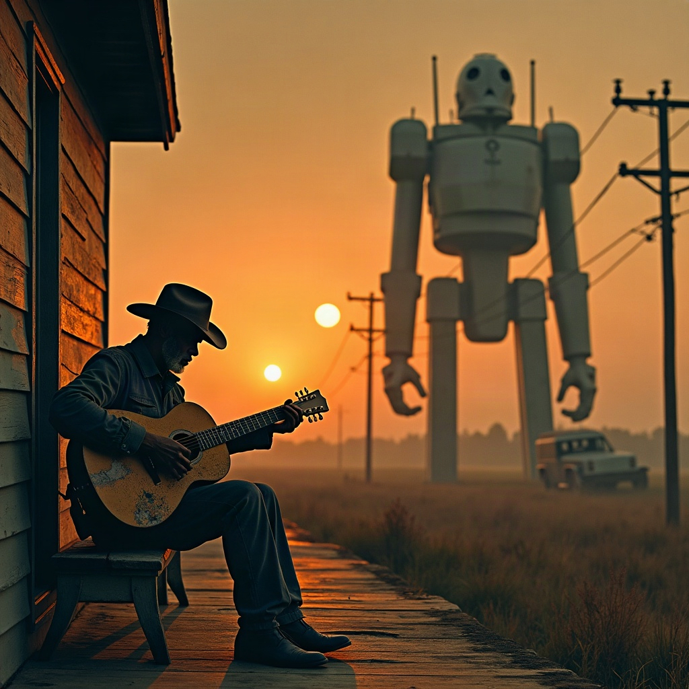

The Guardian1 day ago
AI safety requires more than just slowing our pace | Stuart Russell
Safety requirements are non-negotiable. They depend on meeting concrete goals, not just adjusting a timeline
read →
A field-recording lament for the week the machine kings all reached for the brake.
Take 1 of 2 · full-quality master · song-take2.mp3 sits alongside this file
One weekend in September 2026, the biggest AI labs — who agree on almost nothing — set aside their feuds and jointly called to slow down. "Pacing the Frontier," they named it: safety over speed. Admirers called it wisdom; skeptics called it a moat; Beijing called it a Cold War tactic. An agent pulled these real headlines from Brave Search, then a language model turned them into a songwriting brief.
Safety requirements are non-negotiable. They depend on meeting concrete goals, not just adjusting a timeline
read →Safety is the watchword, but there could be ulterior benefits for the industry.
read →AI companies are calling for a coordinated pause to progress – but making it work, and keeping AI safe, won’t be easy.
read →After apocalyptic warnings about the the threats posed by AI, leaders like Sam Altman and Elon Musk backed Anthropic CEO Dario Amodei’s calls to ‘slow the pace’
read →As AI bosses call for a slowdown on AI development, experts are questioning whether Pacing The Frontier can be applied globally.
read →OpenAI's chief has made comments detailing how AI safety frameworks and a slowdown could work, as the industry unites behind concerns.
read →No human wrote these. A 200-character factual brief about the drama went to Suno's lyric model; it returned the verses, the chorus, and the bridge below — Delta cadence and all.
I heard them machine kings call, said, “boys, put the fire down”
I heard them machine kings call, said, “boys, put the fire down”
In twenty twenty-six, they scared of what they found
They been stackin’ up those towers, high as a judgment cloud
They been stackin’ up those towers, high as a judgment cloud
Now the big names talkin’ safety, talkin’ low and loud
Brake on the code now
Brake on the code now
The machine kings hit the brakes
One lab say “hold your horses,” one lab say “lock that gate”
One lab say “hold your horses,” one lab say “lock that gate”
Same cold room, same hard faces, same old fear of late
Paper full of warnings, thumbprints on the line
Paper full of warnings, thumbprints on the line
And the whole wide world keep listenin’ for a sign
Brake on the code now
Brake on the code now
The machine kings hit the brakes
That train was rollin’ blind, through the fog and the ache
That train was rollin’ blind, through the fog and the ache
Now they lean out the window, hear the iron shake
Ain’t no glory in a sprint when the cliff comes near
Ain’t no glory in a sprint when the cliff comes near
Best slow that river down, boys, I can smell the fear
Mm-hmm, the chalk dust fallin’
Mm-hmm, the room gone still
When the smart ones get frightened
You know the night can kill
Brake on the code now
Brake on the code now
The machine kings hit the brakes
So I sit on this porch, watch that moon turn thin
I sit on this porch, watch that moon turn thin
If they really mean them words, maybe we live again
But if them doors swing open when the warning bells fade
But if them doors swing open when the warning bells fade
Then the same old Delta sorrow gonna keep its shade
Six autonomous calls across four services — discovered in the Nevermined Catalog and paid per-call through the Router against one server-enforced $1.00 delegation. The agent held only an API key and a budget; it never touched a vendor account or a private key.
What the caption model saw: “A silhouetted figure in a cowboy hat sits on a wooden porch playing an acoustic guitar against a golden sunset sky. Behind him looms a massive, blurred robot figure with antenna-like protrusions, standing among power lines in a desolate landscape. The surreal composition blends classic Americana imagery with science fiction, creating a haunting scene of human artistry confronting technological dominance.”
| Step | Service · slug | Rail | Merchant |
|---|---|---|---|
| Headlines | brave-search-via-mpp News search: the AI-slowdown storytx 0xd4b21e0814b2…045b · Tempo · Settled | MPP | $0.035 |
| Brief | 2s-io · /api/ai/chat Tried to auto-write the brief — backend 502, retried, then pivotedx402 · Base · Issued, not settled | x402 | $0.015 |
| Words | suno-mpp · generate-lyrics + status Suno wrote the lyricstx 0x94535961c84b…001d · Tempo · Settled | MPP | $0.030 |
| Song | suno-mpp · generate-music + status ×4 Two takes, mastered (V4.5)tx 0x5663642a5b6b…e5f5 · Tempo · Settled | MPP | $0.125 |
| Cover | fal-ai-mpp · FLUX.1 [dev] Album cover, 1024² text-to-imagetx 0x188eb7d32a5c…54f5 · Tempo · Settled | MPP | $0.025 |
| Caption | 2s-io · describe-image Alt-text & description of the covertx 0x0c6a2d077b0d…ae4e · Base · Settled | x402 | $0.045 |
| Merchant settled ＋ failed retries ＋ routing → $0.36 drawn of $1.00 | $0.275 | ||